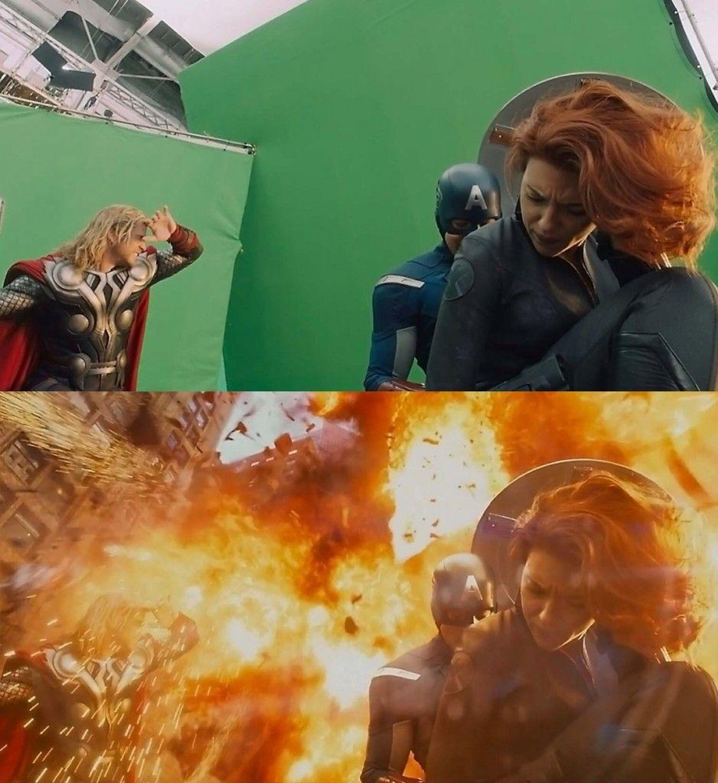
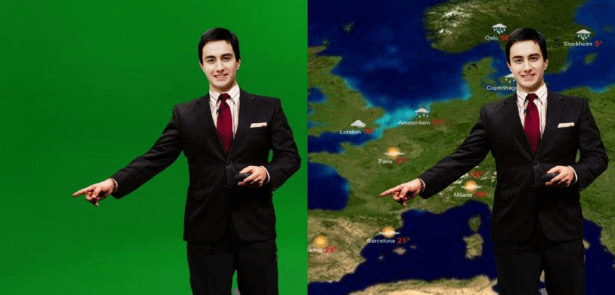
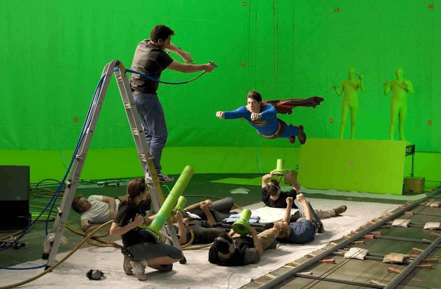

Chroma key: Veja o passo-a-passo de como fazer esse efeito
Se você já assistiu algum filme hollywoodiano com várias cenas impressionantes, efeitos especiais quase que inacreditáveis, você já se deparou com o efeito Chroma key.

O efeito Chroma key nada mais é que o processo de remover um fundo monocromático, ou seja de uma cor só, de um vídeo e substituí-lo por outro fundo como uma imagem ou vídeo.
Pode parecer uma técnica muito complexa de ser feita ou precisar de muito dinheiro para conseguir montar toda a estrutura, mas na verdade é uma técnica bem simples de ser aplicada até mesmo para vídeos online e iremos mostrar a você como através desse guia.
Neste conteúdo você irá aprender:
- O que é o Chroma Key;
- Exemplos de uso do Chroma Key;
- Como usar o Chroma Key;
- Como fazer a montagem do Chroma Key;
- Editores de vídeos compatíveis com fundo Chroma key.
O que é o Chroma Key
O Chroma Key é uma ferramenta prática e rápida usada há muitos anos em gravações. E até os dias de hoje, mesmo com todo o avanço da tecnologia, continua sendo muito utilizada. Com ela é possível trocar uma imagem de fundo de cor sólida por outra imagem, seja estática ou em movimento. Um exemplo bastante comum são as previsões do tempo mostradas em telejornais. A demonstração meteorológica fica a frente do fundo verde, substituído por um mapa colorido.
Exemplos de uso do Chroma Key
Além das previsões do tempo, o Chroma Key aparece diariamente em nossas vidas mais do que podemos imaginar.
Veja alguns desses momentos:
- Programas de televisão: não somente em telejornais, mas muitos programas utilizam o efeito chroma key para ganhar mais interação e atratividade.
- Videoaulas: nas mais diversas matérias e graus de educação, é possível contar com o uso dessa técnica para tutoriais na internet para que o instrutor exemplifique o seu conteúdo, capaz de deixar o ensino mais didático e divertido.
- Filmes e seriados: como falamos anteriormente, grandes filmes de ação e seriados que contam com efeitos especiais usam o Chroma key para tornar o seu enredo a vida real e impressionar os seus telespectadores.
Como usar o Chroma key
Você não precisa ter superpoderes em produções audiovisuais para trabalhar com Chroma key. Apenas o que você precisa é planejamento, escolher a cor do fundo com atenção para a etapa de substituição, uma boa filmagem e um software de edição de vídeo que suporte esse efeito.
Agora vamos ao que interessa, o passo a passo:
O planejamento
Antes de tudo, é necessário definir qual o objetivo final do seu vídeo e se perguntar: Qual imagem irei querer substituir o fundo do meu vídeo? Há objetos, pessoas, roupas ou itens que fazem parte do cenário ou na imagem que irei incluir com alguma cor dominante? Conhecer todos esses pontos é fundamental e irá te auxiliar no próximo passo.
Definindo a cor do fundo que será substituído
Após levar em consideração as perguntas do passo anterior, chegou a hora de definir a cor sólida do fundo que será trocado de seu vídeo.
É importante levar em consideração a cor predominante da imagem na edição final, pois a cor do fundo reflete um pouco nos objetos da cena (contra-luz colorida chamada de spill), então escolha uma cor próxima da imagem final.
Por exemplo, se você deseja colocar um céu de verão na cena final, escolha a cor azul. Se deseja incluir uma paisagem cheia de árvores, escolha a cor verde.
Na prática, você pode escolher qualquer cor de fundo, mas dentre as mais comuns são:
Cor verde
O verde, especificamente verde-limão, é o mais utilizado nas filmagens por frequentemente haver poucos objetos dessa mesma cor, dessa forma evita-se uma mistura com o fundo e o desaparecimento na edição. Esse tom entra em consideração também pelo fato de absorver o brilho, controlando assim a claridade e ajudando o processo de pós-produção.
Cor azul
Para casos onde há objetos verde na cena ou em produções menores, o azul se torna a cor preferida para as gravações. Porém para filmagens em ambiente externo deve-se ter muito cuidado em escolher essa cor, pois se o céu estiver aberto, o efeito será prejudicado.
Como fazer a montagem do Chroma Key
O mais interessante da técnica chroma key é que ela pode ser caseira e construída de duas maneiras: por tinta ou tecido.
Tinta
Caso opte em escolher pintar uma parede, a cor verde é a ideal pois ela se adaptará mais facilmente aos cenários, visto que não será possível trocar a cor da parede a cada nova produção. Tome também os seguintes cuidados:
- Certificar de não ter nenhum objeto que interfira na captura da filmagem como parafusos e tomadas;
- Manter a parede sempre limpa;
- Usar uma tinta fosca para que não reflita muita luz. Hoje há até tintas específicas para chroma key, facilitando ainda mais o processo.
Tecido
Se escolher utilizar tecidos, tenha em mente que esse tipo de material exige cuidados maiores, afinal eles podem amassar, ter diferentes texturas ou refletir muito a luz, dificultando a etapa da edição.
Vale pensar também em manter uma estrutura móvel, assim você poderá colocar o tecido e trocá-lo pelas cores mais adequadas para cada vídeo.
Escolha com cuidado e armazene-os adequadamente e sempre estique bem na hora de usar.
E finalmente, como o último passo, será necessário utilizar um software de edição de vídeos para remover o fundo de cor sólida, sendo a base da técnica.
Existem diversos softwares compatíveis com o Chroma key. Os mais recomendados são:
- Adobe Premiere
- Adobe After Effects
- Sony Vegas
- Final Cut
- Windows Movie Maker
- Camtasia
- PowerDirector
- Corel VideoStudio Pro
A escolha da ferramenta irá depender das necessidades de seu vídeo para obter o tão desejado e idealizado vídeo final, além de seu nível de conhecimento nelas. Escolha a que mais se encaixa nesses aspectos e mão na massa!
Como fazer a troca do fundo no Adobe Premiere
O Adobe Premiere é um dos programas de edição mais utilizados no mundo. Ele possui modalidades das mais simples às mais avançadas e conta com diversos recursos.
O software possui um período gratuito para testes e está disponível para PC e Mac.
Para que você veja na prática como fazer a substituição do fundo, CLIQUE AQUI
Pronto!
Viu como é fácil editar os fundos de seus vídeos com a técnica Chroma Key? Não há dúvidas que seus vídeos ficarão bem mais dinâmicos e atrairá mais pessoas.
Para saber mais sobre o que é e como escolher uma plataforma para hospedagem de vídeos, leia nosso artigo sobre “Como escolher a melhor plataforma para hospedagem de vídeos”.